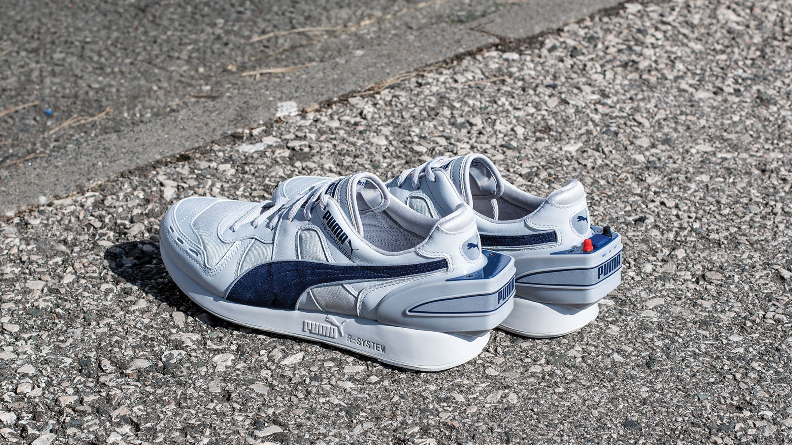
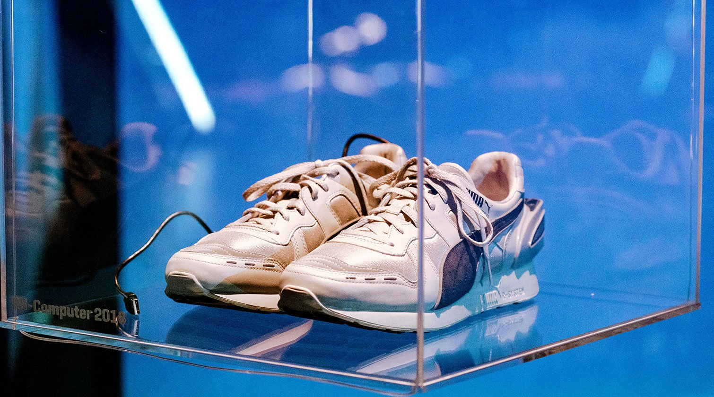

Puma RS Computer Shoes
The first body-worn computer activity tracker — a running shoe you plugged into your Apple IIe.

Overview
The PUMA RS-Computer ('Running System'-Computer Shoe) was a commercially released running shoe with an integrated computer module in the right heel, launched in spring 1985 at $200 USD (roughly $575 in 2025). Developed by sports biomechanics researcher Dr. Peter Cavanagh and microelectronics engineer Heinz Gerhäuser of the University of Erlangen, the shoe used a custom gate-array integrated circuit to measure the timing between successive right-foot ground contacts. Rather than counting steps like a pedometer, it used a stride-length profiling algorithm calibrated to each individual runner: as a runner runs faster, the time between footfalls decreases predictably, allowing the system to compute distance, speed, and caloric expenditure.
The interaction ritual defined the product: press a button on the heel to start recording, run, press again to stop, then at any later time open a flap on the heel, connect a 16-pin serial cable to an Apple IIe, Commodore 64, or IBM PC printer port, and load the software from a 5.25-inch floppy disk to download and analyze the data. A 45-page manual and multiple-user support reflected the reality that personal computers were expensive shared resources. The shoe was a commercial failure — the market simply was not ready for body-worn activity tracking — but it anticipated every interaction pattern of modern fitness wearables by two decades. PUMA reissued it as a limited edition of 86 pairs with Bluetooth and a smartphone app in 2018.
Deep dive
The RS-Computer originated from a challenge issued by PUMA CEO Armin Dassler (son of company founder Rudolf Dassler). Dassler wanted technological differentiation from rival Adidas — founded by his uncle Adolf Dassler after the brothers split the original Dassler shoe company following WWII. He told Cavanagh: 'Do whatever you have to do, but get me this high technology shoe. He didn't care what it was. He didn't care how much it cost.' Cavanagh, a PhD in human gait analysis from the University of London and a 2:45 marathoner, had become PUMA's sports science advisor after interviewing Dassler for his 1980 book The Running Shoe Book. His key insight was rejecting simple pedometers in favor of stride-length profiling: by measuring the timing between footfalls and calibrating to each runner's personal stride characteristics, the system could predict distance more accurately than step-counting. He collaborated with Gerhäuser, a microcomputer engineer at the University of Erlangen near PUMA headquarters, to build the custom gate array — roughly 600–1,000 transistors on a single chip — that served as the shoe's brain. The first prototype was a transparent Plexiglas box attached to the back of a conventional running shoe, with visible electronics inside. Cavanagh still owns this prototype. The infamous planning meeting brought German and American teams together on Catalina Island, California — helicoptered in at Dassler's expense.
Using the RS-Computer was a multi-step ritual that reveals the paradigms of mid-1980s personal computing. First came a one-time calibration: the runner visited a 400m track, ran multiple laps at increasing speeds while counting strides, and entered this data into the software to build their personal stride-length profile. For each run thereafter, the user pressed a button on the right heel to start recording, ran, then pressed it again to stop. At any later time — perhaps days later — they opened a protective flap on the heel, connected a 16-pin serial cable from shoe to computer printer port, loaded the software from a 5.25-inch floppy disk, and downloaded the run data. The software (written in Applesoft BASIC primarily for the Apple IIe) calculated distance, time, speed, and calories burned. It provided historical graphs by week, month, and year, allowed users to add comments to individual runs, and could program distance targets — the shoe would beep when the runner reached the goal. The manual was 45 pages long, which Cavanagh later described as 'a typical academic approach to a consumer product.' The shoe also supported multi-user setups, since a $1,000+ Apple IIe was often shared by an entire household or office. Only the right shoe contained active electronics; the left shoe had an identical plastic bump for symmetry but was empty. A flap-covered 16-pin serial connector port protected the data connection when running.
Unlike modern step counters that simply tally impacts, the RS-Computer measured the elapsed time between successive right-foot ground contacts. Cavanagh's biomechanical research showed that as running speed increases, the time between footfalls decreases in a predictable, runner-specific way. By building a personal calibration curve — time-between-strides mapped to known running speeds from the track calibration — the system could extrapolate distance and speed from raw timing data with greater accuracy than pedometer-based approaches of the era. The custom gate array in the right heel processed these timing signals. A small LED served as a status indicator. The shoe could be programmed to beep when the runner reached a pre-set target distance — an auditory feedback mechanism that prefigured modern pace alerts.
The RS-Computer was a commercial failure. Running Magazine wrote: 'No person, however rich, should ever pay a hundred dollars for a pair of running shoes.' A Washington Post reviewer mocked Cavanagh's use of 'computer-ese' like 'interfacing compatibility' and 'user friendliness.' Sports Illustrated described the heel bulge as the shoe's 'crowning feature' and portrayed Cavanagh as a '2:45 marathoner with a Monkish aspect.' Several factors doomed it: $200 was extremely expensive for running shoes; personal computer ownership was not yet ubiquitous; the calibration ritual and 45-page manual created high friction; and the concept of self-tracking for fitness was, as Cavanagh later reflected, '15 to 20 years ahead of its time.' Nike conducted market research at the time that found 'no solid market for computerized shoes.' Cavanagh's 2018 reflection captures the bittersweet legacy: 'I'm a little regretful that the technology wasn't better accepted at the time and I think we could have short-circuited the activity tracking developments by perhaps 15 to 20 years.' In December 2018, PUMA reissued the RS-Computer as a limited edition of 86 individually numbered pairs (referencing 1986) at €650/~$740. The update replaced the gate array with a three-axis accelerometer and Bluetooth connectivity, added USB charging, and paired with an iOS/Android app featuring 8-bit retro graphics and a built-in retro game. Cavanagh called it 'a nice affirmation that it was a good idea whose time had not yet come.'
The RS-Computer is a boundary object between footwear, sensing hardware, and personal computing. It is arguably the first body-worn, computer-connected activity tracker in history — preceding the Nike+iPod Sport Kit (2006) by two decades and Fitbit (2009) by nearly a quarter century. Every interaction pattern modern wearables take for granted was present in this 1986 shoe: start/stop recording, personal calibration, longitudinal data tracking, goal-setting with feedback, and data export to a computing platform. What was missing was the infrastructure to make it effortless — ubiquitous personal computing, wireless connectivity, automatic activity detection, and a cultural readiness for self-quantification. The RS-Computer was the right idea at the wrong time, and its failure illuminates how much of HCI success depends not on the interaction model itself but on the ecosystem surrounding it. Original units survive at the Bata Shoe Museum in Toronto, the DigiBarn Computer Museum, and the PUMA Archive in Herzogenaurach. Dr. Cavanagh still owns the original transparent-Plexiglas first prototype.
Team & pioneers
- Dr. Peter Cavanagh. PhD in human gait analysis (University of London, 1968). Professor at Penn State, Cleveland Clinic, and University of Washington. PUMA's sports science advisor. Marathoner (2:45 PB). Developed the stride-length profiling algorithm.
- Heinz Gerhäuser. Microelectronics engineer, University of Erlangen. Built the custom gate array integrated circuit that served as the shoe's processor.
- Armin Dassler. Owner/CEO of PUMA AG, son of founder Rudolf Dassler. Issued the challenge to create a 'high technology shoe' with effectively unlimited resources.
- PUMA AG. Herzogenaurach, West Germany. Athletic footwear company founded by Rudolf Dassler. The RS-Computer was the flagship product of the new Running System (RS) collection.
Media

Sources
- PUMA Official — Dr. Peter Cavanagh Interview (March 2018)
- Tech Briefs — How Fitness Wearables Began (April 2019)
- PUMA Official — History of RS
- Sports Illustrated Vault (May 13, 1985) — Contemporary review
- Wikipedia — RS-Computer
- Sneaker History — PUMA Built a Fitbit in 1986
- DigiBarn Computer Museum — Computer Tennis Shoes
- US Patent 4771394A — Computer shoe system